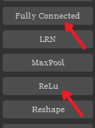
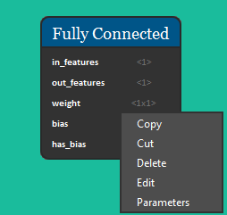
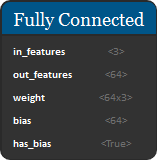
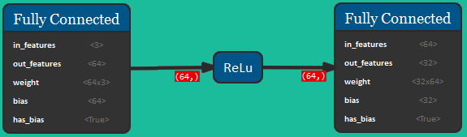
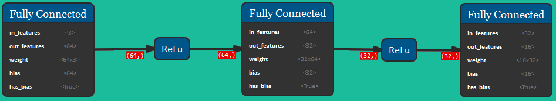
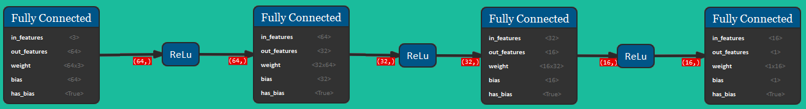
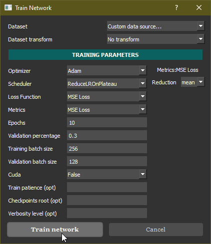
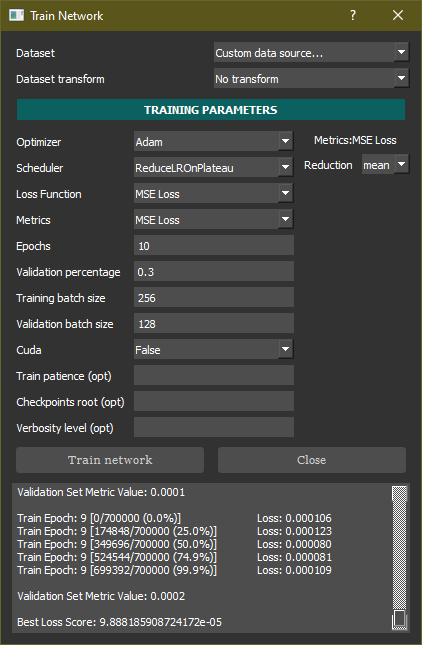
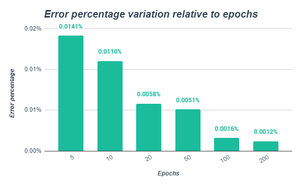

Tutorial
Once NeVer2 is open, select the required blocks in the toolbar on the left. In this case we're going to use only Fully Connected and ReLU blocks.
When clicked, the desired nodes will appear on the canvas with default parameters. Drag and drop them any position you like on the canvas. To edit their parameters double-click or right-click and click "edit". To delete them right-click and click "delete" or press the DEL key.
To begin, we're going to select a Fully Connected block and set the "in_features" and "out_features" parameters to values 3 and 64 respectively.
After selecting a ReLU node, we can connect them activating the drawing mode with the "Draw Line" button (in the top-left corner) or by pressing the CTRL+D shortcut and clicking on them (first click on Fully Connected block and then on the ReLU node).
We're now going to add a new Fully Connected block and set its "out_features" parameter to 32, then link the previous ReLU node to it. By connecting the ReLU node the new Fully Connected block "in_features" parameter is automatically set to the ReLU output value (64). Next, we're adding another ReLU node and we're connecting the previous Fully Connected node to it.
We're now going to repeat the last two steps one more time, creating a Fully Connected node with "out_features" set to 16, and adding a subsequent ReLU block.
Lastly we're going to add a final Fully Connected block and set its "out_features" parameter to 1.
Now that we have successfully built the network, we need to train it. We're going to click on the "learn" button in the menu bar, then click on the "train" button and select the ACC custom dataset (TXT or CSV format). The target index field contains the input size.

Then, we're going to set the training parameters according to the following image.
Finally we're going to click on the "Train Network" button and wait for the results.
 The "Best Loss Score" label indicates the network's error percentage. In this case, with a 10 epoch long training we got about 9.8e-05, corresponding to
a 0.0098% error rate!
As shown in the graph below, if you train the network for more epochs you will notice an improvement in the error percentage.
